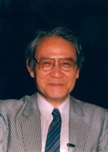

Please note: the AAS Obituaries are temporarily being hosted on this website while their full content is being ingested into the PubPub publishing platform newly adopted by the Bulletin of the American Astronomical Society. When the migration is complete, your existing links will take you to the final, migrated content. Contact peter.williams@aas.org with any questions.
Jun Jugaku (1927-2011)
An expert on stellar physics, the president of IAU commission on stellar spectra (1982-85) and an associate editor of the Publications of Astronomical Society of Japan (PASJ) for 24 years who made it to be one of the top-level journals of astronomy.
Jun Jugaku was born on 19 September 1927 in a famous family in Kyoto to Bunsho and Shizu. He had an elder sister, all of them belonging to an intellectual society by publishing books on English and Japanese literature as well as on astronomy. He had been educated in Kyoto and graduated from Kyoto University by majoring in astronomy in March 1950.
In 1953, with a Fulbright fellowship in the USA, he was successfully accepted as a graduate student by the University of Michigan. There his advisor was Lawrence H. Aller, with whom he studied stellar atmospheres, and published papers on the spectra of Tau Scorpii as well as on B-type stars in general. In 1957, he completed the course and the Ph.D. degree was awarded in 1958. His Ph.D. thesis was “A Study of the Ratio of Helium to Hydrogen in the Atmospheres of the B Stars.”
He came back to Kyoto University by obtaining a fellowship to commemorate Hideki Yukawa, who had been awarded the Nobel Prize in 1949. There he worked with Chushiro Hayashi and published papers on “Evolutions of Massive Stars,” “Models of Massive Stars in Helium- Burning Stage,” and others.
In 1958 he was nominated as a research associate of the California Institute of Technology and worked with Wallace L. W. Sargent and others on stellar physics. There he detected 3He in the atmosphere of 3 Centauri and with Roger Cayrel he studied the atmospheres of late-type stars.
In 1963 he was appointed as Lecturer of Tokyo Astronomical Observatory, University of Tokyo, and in the next year promoted to Associate Professor. One of his important works there was the optical identification of the radio star, Sco X-1, for which Minoru Oda determined a rough position using his Sudare collimator. To use the 188-cm telescope at Okayama Observing Station, he suggested an idea to Oda and they succeeded in identifying Sco X-1.
While he was at Tokyo Astronomical Observatory, he spent much time in the editorial work of the Publication of the Astronomical Society of Japan (PASJ). Before the 1980s, as the financial situation of the Astronomical Society had been very poor, no staff-assisted editorial work was employed. Therefore, associate editors had to cover all the editorial work of PASJ. He came in as an associate editor; after he learned what editorial staff should do, he made every effort to improve the quality of PASJ by the standpoint of editors.
Shortly before he became the associate editor, the referee system was introduced for PASJ. However, in the early days, referees were chosen only among Japanese astronomers. Then he introduced the system that at least one of the two referees for each paper was chosen from among the international community and the level of the refereeing system became of an international standard. He served as the associate editor for 24 years, in 1963-67 and again in 1969-89. Indeed, his efforts pushed the scientific level of PASJ much higher than before.
He had been involved in activities of the International Astronomical Union (IAU). In 1979-85, he served as the Vice-President and then President of the Commission 29 on Stellar Spectra and as a member of the organizing committee of the Bio-astronomy commission in 1982-91. He was an editor of the proceedings of IAU Symposium on ”Star Forming Regions.”
He had been a rationalist as well as a humanist in whole his life. And as he had been concerned with paranormal theory spreading in Japan、 with his colleagues the Japan Skeptics Society was organized and the first issue of its journal was published 20 years ago. He served as the first President of the Japan Skeptics.
In 1970s Japanese astronomers started to discuss about a plan for a new optical telescope, for which he had a definite idea. In fact he proposed to install the new telescope at an astronomically good place, namely a place such as at Mauna Kea, Hawaii. Although his idea was not supported so much at the beginning, the new 8-m telescope, Subaru, was completed at Mauna Kea at the end of 20th century.
At the age of 60 he left the Tokyo Astronomical Observatory as well as Tokyo University as a professor in 1988, and for the next 10 years he worked for Tokai University.
Although he suffered from a brain stroke in 2003 and from a blockage of the small intestine in 2006, he almost completely recovered. Still, in the last five years he had to stay in bed for most of the time. However, his brain had been kept very clear and he read many scientific papers which he could understand well. However, after he felt that books were too heavy for him to hold, he passed away on 14 September 2011. In fact he had been a hard worker in every sense and as his only hobby he spent his free time for bird watching with his wife and friends.
His wife, Kazuko, survives him.
Obituary written by: Kozai Yoshihide
BAAS Citation: BAAS, 2012, 44, 002